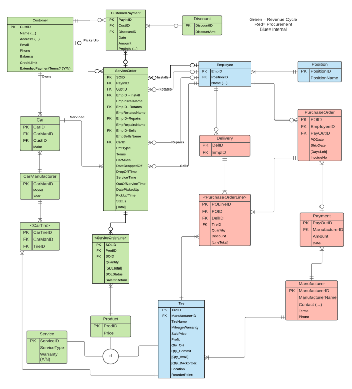
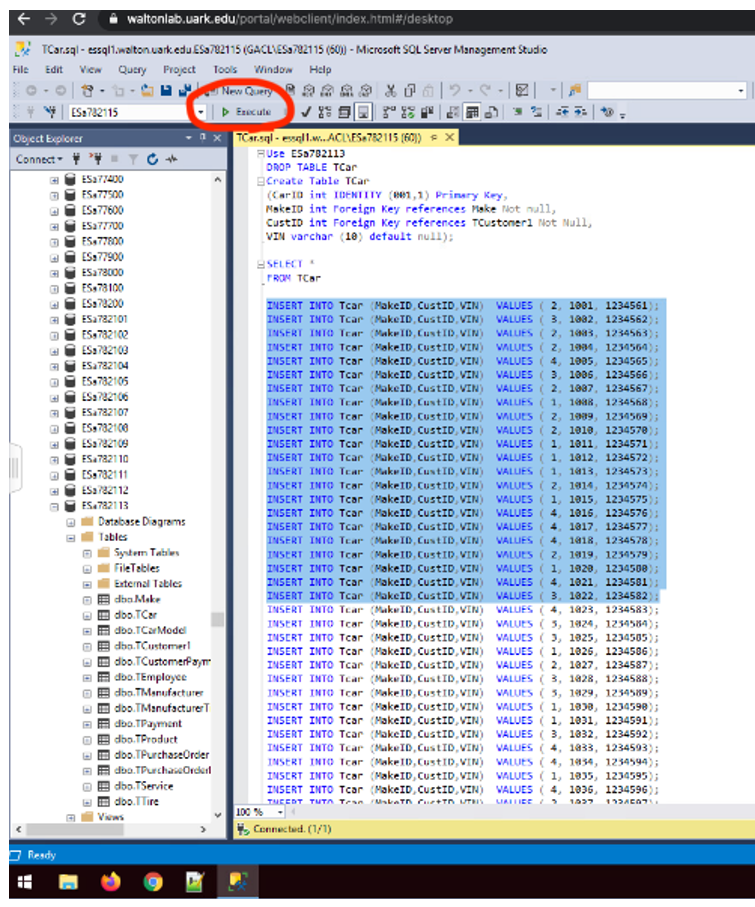

For this project, the Federal Aviation Administration (FAA) requested we aid them with their technical debt. Technical debt is essentially the consequence of developers delivering speedy code over quality code. Over time, this 'bad' code breaks down, and companies must decide if they should pay the cost of refactoring it. The FAA asked us to help them find ways to manage their technical debt, measure it, and compare it to similar organizations. This could give them a baseline to figure out if their technical debt hinders their operations. For this project, we were asked to investigate their three main forms of technical debt by studying other organizations and their methods employed to deal with it. Furthermore, we explored existing third-party solutions as well as industry best practices.
Click below to download this project's final report
Download ProjectFor this project, my team and I were given the task of creating a database for a fake company, Sonner Tire. To accomplish this, we made a conceptual, logical, and physical design and then implemented it using SQL Server. Some requirements of this project included designing an ERD, conducting normalization and denormalization, making a data dictionary, creating our ERD tables in SQL Server, loading data into our tables, then conducting SQL query analysis to answer questions for the client.
This is the ERD we designed:
Next is a screenshot of SQL Server. It shows how we created the table 'TCar' and then how we loaded our data into the table. In the Object Explorer tab to the left, some of our other tables are also visible, such as 'TManufacturer' & 'TEmployee'.
Click below to download this project's final report
Download ProjectFor this project, my team was asked to design a system for a fake church. In order to do so, we created an ERD, a DFD (Context, System, and Lower-Levels), Proccess Specs, a Data Dictionary, a Data Model, a Dialog Diagram, and a Prototype. This project was designed for a team of four students, but due to uneven numbers, my team began as a team of three. Furthermore, our third team member chose not to participate in the class, so my teammate and myself accomplished this project with half the manpower of other teams. Our professor did slightly decrease the scope of our project, but we still lacked having the knowledge and opinions of other students. Overall, I am proud of the work that my teammate and I produced.
Click below to download this project's final report
Download Project*This report also includes instructions for deploying the simple prototype we designed.